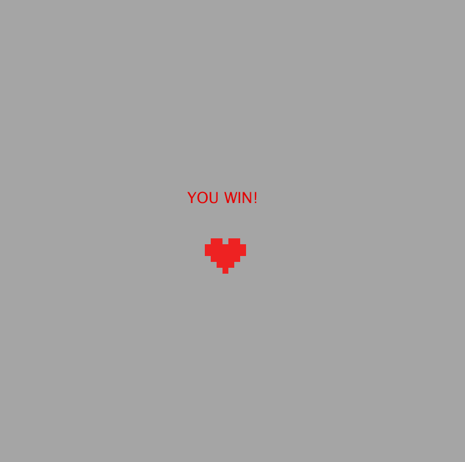
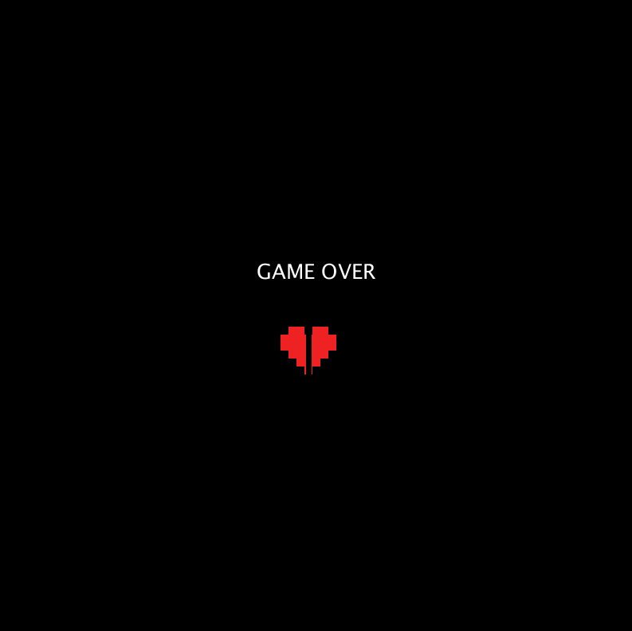

Setup
The game is set in a grey maze, two figures in the top left and bottom right corners. You control the square while the circle (your lover) is computer controlled. There is one rose currently hidden somewhere in the maze.
Controls
Use the up and down arrows for moving north and south, left and right arrows for west and east respectively.
Playing the Game
Using the controls listened above, move your character around in the maze. Avoid the circle, which will be constantly moving. If you are caught by your lover, you lose the game. Move around in the maze to attempt to find the rose.
Ending the Game
The game ends when you, the player, either gather one rose to win, or are caught by them and lose the game.
 